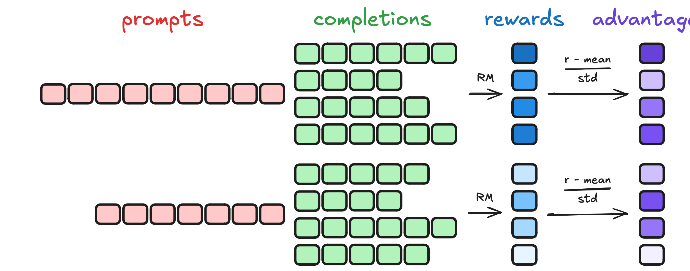
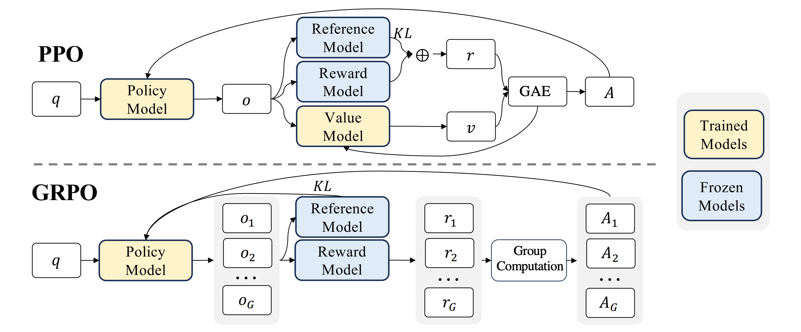
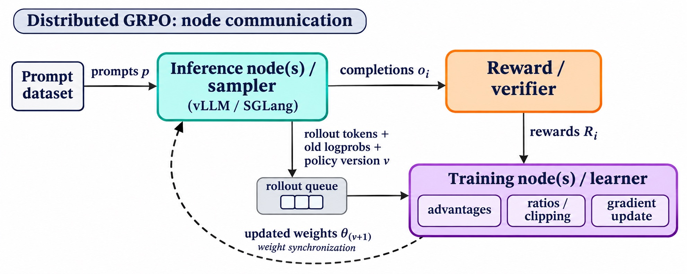
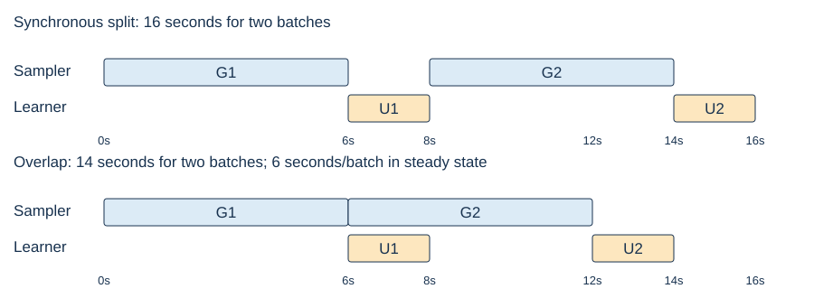

Group Relative Policy Optimization (GRPO) compares several responses to the same prompt, then combines their relative rewards with the clipped policy update from #20. Implementing that idea requires choices about what to average, how far to change probabilities, and which policy actually generated the data.
- Scope
- Slides 67–91 (PDF pages 67–91 in this export). Alignment failures begin at 92 and are outside this reading.
- Time
- 45–60 minutes for §1–§6, including the required systems and cost accounting; 20–25 minutes for the 20-point practice set (§7). The runnable extension in §8 is optional.
- By the end
- Compute group advantages and a GRPO loss; diagnose normalization and clipping effects; distinguish current, rollout, reference, and behavior policies; calculate ideal pipeline throughput and identify its statistical costs.
- Prerequisites
- #20: advantages, importance weighting, and PPO clipping; #19: policy gradients and KL. Logs are natural. $x$ is a prompt; $y_i$ a completion of length $T_i$; $s_{i,t}=(x,y_{i,<t})$ its prefix; $a_{i,t}=y_{i,t}$ its selected token. Count generated tokens, including EOS when generated; exclude prompts and padding.
Slide-to-reading map
- 67–76 → §1–§2: group advantages, the objective, and policy roles.
- 77–79 → §3: dynamic sampling, reward scaling, and length weighting.
- 80–81 → §4: asymmetric clipping and the reference penalty.
- 82–88 → §5: generation/scoring costs, engine mismatch, and scheduling.
- 89–91 → §6: behavior-policy correction and the final audit.
0Three predictions
Answer briefly before reading; revisit after §6.
All four responses earn reward 1. Does GRPO reinforce all four? Must the entire training gradient be zero?
Predict first, then reveal
All centered advantages are zero, so the task policy term has zero gradient. A separate reference penalty or another auxiliary objective can still update the model. Even with zero total current gradient, optimizer momentum or weight decay may move parameters.
If the upper ratio threshold increases from 1.2 to 1.28, must every token become more likely? Must entropy increase?
Predict first, then reveal
No. The change extends the reinforcement region for positive advantages. It does not force an update, target every token, or guarantee higher entropy.
Do identical model weights guarantee identical rollout and training log-probabilities?
Predict first, then reveal
No. Precision, kernels, routing, and sampling transformations can change the effective distribution. The denominator must describe the actual sampler.
1Compare responses within a prompt
For each prompt, sample $G\ge2$ responses and score them with an outcome verifier or reward model. Compute one mean and standard deviation per prompt group. For this handout, use the population standard deviation:
$$\mu=\frac1G\sum_i R_i,\qquad \sigma=\sqrt{\frac1G\sum_i(R_i-\mu)^2}.$$ $$\widehat A_i=\frac{R_i-\mu}{\sigma+\delta},\qquad \delta>0.$$The stabilizer δ prevents division by zero. Unless stated otherwise, numerical exercises use δ = 0 when σ > 0 and define all advantages as zero when σ = 0. Code uses δ = $10^{-8}$. A sample-standard-deviation convention gives different numbers; state which one you use.


For rewards $(1,1,0,0)$, μ = 0.5, σ = 0.5, and advantages are $(+1,+1,-1,-1)$. With outcome supervision, every generated token of response i receives the same coefficient $\widehat A_i$. This is coarse credit assignment: a failed response can contain useful steps.
DeepSeekMath, §4.1, introduced GRPO’s group baseline in place of a learned value model. Removing that critic saves its training and storage; sampling multiple completions still costs compute. No separate learned reward model is required when rewards are verifiable.
Choosing G. At a fixed budget of BG completions with comparable lengths, increasing responses per prompt G leaves fewer distinct prompts B. Larger groups can improve within-prompt comparisons but reduce prompt coverage; they do not guarantee better learning. With G = 1, self-centering always gives zero advantage.
Use rewards $(1,0,0,0)$. Compute μ, σ, and the advantages. Repeat for $(0,0,0,0)$. Does adding δ create a learning signal in the second group?
Predict first, then reveal
μ = 1/4 and σ = $\sqrt3/4$. Advantages are $(\sqrt3,-1/\sqrt3,-1/\sqrt3,-1/\sqrt3)$. For the all-zero group, μ = σ = 0 and every advantage is zero. A stabilizer fixes division by zero; it cannot manufacture a contrast.
1.1 A group mean is a sampled baseline
The group mean includes response i’s own reward. It therefore does not satisfy #19’s response-independent-baseline assumption. To see the consequence, suppose responses are independent samples from the current policy, rewards have no direct parameter dependence, there is no clipping or standard-deviation scaling, and each whole response is one action. Let $g_i=\nabla_\theta\log\pi_\theta(y_i\mid x)$ and $h=\mathbb E[R_i g_i]$. Cross-response terms vanish because $\mathbb E[g_i]=0$:
$$\mathbb E[\mu g_i]=\frac{h}{G},\qquad \mathbb E[(R_i-\mu)g_i]=\left(1-\frac1G\right)h.$$Thus self-inclusion introduces a known scale factor in this simplified case. A leave-one-out baseline $b_{-i}=\sum_{j\ne i}R_j/(G-1)$ removes it: $R_i-b_{-i}=G(R_i-\mu)/(G-1)$. Dividing by a random group standard deviation adds further reweighting. Detaching these quantities is necessary for the intended surrogate, but does not prove an unbiased expected-reward gradient.
2Assemble the GRPO update


2.1 Keep three policy roles separate
| Policy | Role | During batch reuse |
|---|---|---|
| $\pi_\theta$ | Current learner; numerator in r | Changes with updates |
| $\pi_{\rm old}$ | Snapshot that generated this synchronous batch | Stored log-probabilities stay fixed |
| $\pi_{\rm ref}$ | Anchor for regularization | Frozen during this training phase |
The reference need not track every rollout refresh. Some multi-stage recipes reset it between outer phases. For now assume the old policy exactly matches the sampler; §6 relaxes that assumption.
$$r_{i,t}=\exp\!\left(\log\pi_\theta(a_{i,t}\mid s_{i,t})-\log\pi_{\rm old}(a_{i,t}\mid s_{i,t})\right).$$ $$\ell(r,A)=\min\{rA,\operatorname{clip}(r,1-\epsilon,1+\epsilon)A\}.$$Write the response-averaged batch objective in two short lines:
$$U_i(\theta)=\frac1{T_i}\sum_{t=1}^{T_i}\left[\ell(r_{i,t},\widehat A_i)-\beta K_{i,t}(\theta)\right],$$ $$\widehat J(\theta)=\frac1G\sum_{i=1}^G U_i(\theta),\qquad L(\theta)=-\widehat J(\theta).$$Maximize $\widehat J$, or minimize L. Rewards, advantages, old log-probabilities, and the sampled token/prefix data remain fixed during reuse. Current log-probabilities retain gradients. The outer expectation in the lecture averages over prompts and rollout groups; the displayed expression is one sampled group’s surrogate.
2.2 What the KL term estimates
For a fixed stored prefix s, a mathematically explicit choice is the full-vocabulary conditional KL:
$$K(s)=\sum_a p(a\mid s)\log\frac{p(a\mid s)}{q(a\mid s)},\quad p=\pi_\theta,\ q=\pi_{\rm ref}.$$This sums over all possible next tokens, not just the selected token. Averaging conditional KLs at old sampled prefixes is a regularizer on that prefix distribution; it is not automatically whole-response KL under the current policy.
The nonnegative sampled estimator in the GRPO paper
DeepSeekMath, Eq. 4, uses $k(a)=z-\log z-1$, where $z=q(a\mid s)/p(a\mid s)$. Since $\log z\le z-1$, k is nonnegative, with equality at z = 1. If p and q have common positive support, then
$$\mathbb E_{a\sim p}[k(a)]=\sum_a q(a)-1+\sum_a p(a)\log\frac{p(a)}{q(a)}=D_{\rm KL}(p\|q).$$The expectation requires sampling from p. Unweighted old-policy samples generally do not satisfy it; at a fixed prefix, exact importance correction uses p/old. Also, equality of expected values does not imply that differentiating k on fixed sampled actions gives an unbiased gradient of KL: differentiating an expectation whose sampling distribution depends on θ includes the score-function term. Specify both the estimator and gradient convention in an implementation. The core worked batch below sets β = 0 so these choices cannot be confused with its policy loss.
2.3 One complete frozen-batch calculation
- Freeze a rollout snapshot and sample G completions for each prompt.
- Store generated tokens, their valid-position mask, and actual collection log-probabilities.
- Score completions and compute detached advantages within each prompt group.
- Score the stored tokens under the current learner; form ratios using the stored denominator.
- Apply the declared clipping, reference term, and reduction; minimize the negative objective for a limited reuse phase.
- Collect fresh rollouts and monitor reward contrast, mismatch, and held-out quality.
Use four length-2 responses with rewards $(1,1,0,0)$ and advantages $(1,1,-1,-1)$. Set β = 0 and symmetric ε = 0.2. At collection r = 1 everywhere: the mean surrogate is zero, but its gradient need not be. After an update, re-score the same tokens:
| Response | A | Token ratios | Token contributions | Response mean |
|---|---|---|---|---|
| 1 | +1 | 1.30, 1.10 | 1.20, 1.10 | 1.15 |
| 2 | +1 | 0.90, 1.00 | 0.90, 1.00 | 0.95 |
| 3 | −1 | 0.70, 0.90 | −0.80, −0.90 | −0.85 |
| 4 | −1 | 1.10, 0.80 | −1.10, −0.80 | −0.95 |
The surrogate is $(1.15+0.95-0.85-0.95)/4=0.075$; the minimization loss is −0.075. Tokens (1,1) and (3,1) lie strictly in favorable flat regions. Token (4,2) is at a kink; do not assign it a unique classical derivative. A flat local term does not prevent shared parameters, other losses, or optimizer momentum from moving its probability.
After this update, a teammate recomputes old log-probabilities using the learner’s latest weights, leaving responses unchanged. What goes wrong? Can the reference model supply the denominator instead?
Predict first, then reveal
Ratios return to 1 while the responses still come from the original sampler. The denominator no longer describes collection. Keep old log-probabilities fixed until genuinely new rollouts are collected. The reference is a regularization anchor, not a substitute for collection probabilities.
3Normalization changes the update
3.1 Spend rollouts on informative groups
When all rewards are equal, the advantage coefficients vanish. For independent binary outcomes with success probability p, the probability that a group contains both successes and failures is
$$P(\text{mixed group})=1-p^G-(1-p)^G.$$For p = 0.5 and G = 4 it is 0.875. For p = 0.99 it is approximately 0.039404: most groups have no reward contrast. Under a fixed p and independent repeated groups, the expected number of groups drawn per retained mixed group is the reciprocal, approximately 25.38 in the latter case.
DAPO’s dynamic sampling oversamples and retains groups with mixed correctness outcomes. This changes the effective prompt distribution and has a generation cost. It is distinct from deduplicating equivalent reasoning traces. Reward diversity, token entropy, and semantic diversity measure different things; none certifies reasoning quality.
3.2 Group standard deviation reweights prompts
For binary rewards with observed success fraction $\widehat p=k/G$, the population standard deviation is $\sqrt{\widehat p(1-\widehat p)}$. Ignoring δ for a mixed group:
$$A_{\rm success}=\sqrt{\frac{1-\widehat p}{\widehat p}},\qquad A_{\rm failure}=-\sqrt{\frac{\widehat p}{1-\widehat p}}.$$A rare success in a hard group receives a large positive coefficient; a rare failure in an easy group receives a large negative one. Relative to mean-centering alone, the entire group is scaled by $1/\sigma$. This is the precise sense of “difficulty weighting”; it does not establish a universally larger net parameter update for easy or hard prompts. At the all-equal endpoints, the numerator is zero.
Removing the σ division preserves reward units while retaining group centering. Liu et al., §3.1–§3.2, analyze this weighting and response-length normalization. Neither removing normalization nor retaining it is a universal guarantee of improved training.
A group contains four very different explanations, all accepted by a binary verifier. Another group has three accepted answers and one rejected answer. Which has nonzero group advantages? What can the verifier still miss?
Predict first, then reveal
Only the second has reward contrast. The first has zero centered advantages despite textual diversity. In either group, an outcome verifier can miss invalid intermediate reasoning or accept exploitation of its parser/tests.
Assume independent binary rewards, success probability p = 0.5, and G = 4. What fraction of groups has reward contrast? How many independent groups must be drawn on average to retain one mixed group? Does filtering preserve the original prompt distribution when different prompts have different success probabilities?
Predict first, then reveal
The mixed fraction is 1−2(0.5)4 = 0.875; the expected number drawn is 1/0.875 = 8/7 ≈ 1.143. Retention probabilities depend on p, so filtering generally reweights the prompt distribution toward prompts producing mixed groups.
3.3 State exactly what is averaged
Let $u_{i,t}$ be a valid token’s policy contribution (or policy-minus-KL contribution if specified). Three reductions are:
$$J_{\rm response}=\frac1G\sum_i\frac1{T_i}\sum_t u_{i,t},$$ $$J_{\rm token}=\frac{\sum_i\sum_t u_{i,t}}{\sum_i T_i},\qquad J_{\rm fixed}=\frac1{GC}\sum_i\sum_t u_{i,t}.$$C is a fixed positive length scale across batches, such as a configured generation limit. It is not the sampled response length. For two responses of lengths 2 and 8, the respective per-token coefficients are:
| Reduction | Length-2 response: each token | Length-8 response: each token | Total response weights |
|---|---|---|---|
| Response mean | 1/4 | 1/16 | 1/2 and 1/2 |
| Token mean | 1/10 | 1/10 | 1/5 and 4/5 |
| Fixed C = 8 | 1/16 | 1/16 | 1/8 and 1/2 |
Response averaging downweights each token in longer responses. With a negative advantage, this can weaken suppression of tokens in long failed completions. Length is discrete, fixed sampled data during the update: the model does not differentiate through the denominator. The bias arises through weighting sampled trajectories, not a direct gradient with respect to a length variable.
Token averaging gives every valid token equal weight within the batch. Fixed normalization also gives equal per-token weights, but avoids the batch-dependent denominator: token and fixed reductions differ only by an overall scalar within a fixed batch, not necessarily across batches. Changes in global gradient scale can interact with clipping, auxiliary losses, and the optimizer. Neither reduction makes the full clipped GRPO update an exact expected-reward gradient.
Two responses have lengths 2 and 8. Every token in the first has contribution +1; every token in the second has contribution −1. Compute all three objectives above with C = 8. Does a zero response-mean objective imply zero gradient?
Predict first, then reveal
Response mean: (+1−1)/2 = 0. Token mean: (2−8)/10 = −0.6. Fixed: (2−8)/16 = −0.375. Zero value does not imply zero gradient: the positive and negative token terms can have different parameter derivatives.
EOS versus a token-budget cutoff. A sampled EOS ends a completion; hitting the generation limit leaves a truncated trace and does not by itself establish that its reasoning was wrong. Record the stop reason and declare its reward and masking policy. If a response is excluded from the loss, exclude its tokens from the reduction denominator too, and state whether it also leaves the group statistics. DAPO §3.4 discusses reward noise from truncated outputs.
4Clip reinforcement and suppression separately
Replace the symmetric interval by $[1-\epsilon_{\rm low},1+\epsilon_{\rm high}]$. The minimum selects the active side according to the advantage sign:
$$\ell(r,A)=\begin{cases}A\min(r,1+\epsilon_{\rm high}),& A>0,\\A\max(r,1-\epsilon_{\rm low}),& A<0,\\0,& A=0.\end{cases}$$- Upper threshold: beyond it, this term stops rewarding further probability increases for positive-advantage tokens.
- Lower threshold: below it, this term stops rewarding further probability decreases for negative-advantage tokens.
Raising only εhigh permits more reinforcement before the plateau while retaining the earlier stopping point for suppression. This can preserve useful alternatives that received negative coefficients from a failed response.
For an old token probability of 0.01, the positive-advantage plateau starts at new probability 0.012 with εhigh = 0.2, versus 0.0128 with 0.28. For old probability 0.9, the corresponding 1.08 threshold is unreachable by a probability. Increasing the upper threshold affects all positive-advantage terms, but can particularly matter for initially unlikely tokens. DAPO reports an exploration benefit from Clip-Higher; higher entropy is an empirical outcome, not a mathematical consequence of widening a clip.
Let εlow = 0.2 and εhigh = 0.28. For each pair $(r,A)=(1.25,2),(1.30,2),(0.75,-2),(1.25,-2)$, find the contribution and its derivative with respect to r.
Predict first, then reveal
Values: 2.5, 2.56, −1.6, −2.5. Ratio derivatives: +2, 0, 0, −2. The upper threshold only flattens positive-advantage reinforcement; the lower only flattens negative-advantage suppression. These points avoid the kinks.
4.1 Clipping does not replace a reference anchor
The ratio compares the learner with the rollout snapshot; reference KL compares it with a separate anchor. Setting β = 0 removes that anchor and can save reference scoring/storage, but clipping still does not bound accumulated drift over successive batches. DAPO omits reference KL in its reasoning recipe. Treat this as a task-specific design choice: compare held-out correctness, general capabilities, reward exploitation, and drift under the actual training setup.
5The system changes the statistics
5.1 Generation, scoring, and memory
For B prompts, G completions per prompt, and average response length T, generation produces about BGT tokens. Each individual response needs sequential token choices, while separate responses can be batched. Increasing G purchases better within-prompt comparisons with more rollouts; it is not free variance reduction.
A known completion can be scored at all its positions in a causally masked pass when it fits the context window. Its probabilities are computed by the model; they are not a lookup in a precomputed table. This exposes more parallelism than autoregressive generation but retains the Transformer forward computation and output-head normalization. Training adds backward computation and optimizer work. See #20 §3 for arithmetic formulas.
| Stage | Main live memory | Work to account for |
|---|---|---|
| Rollout generation | Weights, KV cache, serving buffers | Prefill; sequential decoding; sampling |
| Learner | Weights, gradients, optimizer state, activations | Current scoring, backward pass, updates |
| Reference/reward scoring | Model weights and forward buffers, when model-based | Extra forward passes or verifier execution |
Old selected-token log-probabilities can be stored at collection. A frozen reference can be scored once per stored batch; recomputing the current learner’s probabilities is necessary after updates. Full-vocabulary KL requires more distribution information than selected-token reference scores. GRPO removes the critic’s costs, not these costs. Which stage dominates wall time depends on lengths, batch sizes, hardware, parallelism, and verifier cost.


5.2 Colocation, separation, and overlap
Colocated generation/training can reuse devices but requires memory management and stage switching. Dedicated pools permit specialized serving and training; separation alone does not imply overlap. A synchronous split can still alternate stages and leave each pool idle while the other works.

With generation time g and learner time u per batch, ignoring transfer, synchronization, and warmup, synchronous throughput is $1/(g+u)$ batches/s. An ideal overlapped pipeline approaches $1/\max(g,u)$; the ideal speedup is $(g+u)/\max(g,u)\le2$ for these two fixed stages. With g = 6 s and u = 2 s, this is 0.125 versus about 0.167 batches/s: 4/3 speedup. The same pools and stage times are assumed; this is not a comparison against giving all devices to each colocated stage.
Variable-length stragglers, communication, weight synchronization, and pipeline fill/drain reduce this ideal. Continuous batching lets serving replace completed requests while others continue; it does not remove each response’s sequential dependence. AReaL illustrates asynchronous rollout/learner separation with explicit staleness control.
A pipeline processes 30% more batches per hour but needs 50% more batches to reach a held-out target. Did it improve time to that target? What else should be measured?
Predict first, then reveal
No, under these assumptions: time scales by 1.5/1.3 ≈ 1.154, about 15.4% longer. Measure time and accelerator-hours to a fixed evaluation target, as well as tokens/s, accepted-group rate, reward quality, and policy staleness.
5.3 Same weights can still give different distributions
The actual serving distribution can differ from the learner’s recomputation because of numerical precision, kernels, hardware, reduction order, or MoE routing. Temperature and top-k/top-p also alter sampling probabilities. A ratio that should start at 1 under matched policies may not do so when engines disagree.
Audit selected-token log-probabilities on identical prefixes, weights, and decoding settings before attributing mismatch to learning. Record model/version identifiers and behavior log-probabilities at generation. A deterministic equality check at one setup does not guarantee equality under every batch shape.
6Correct for the actual behavior policy
Let $b(a\mid s)$ denote the actual sampler, which can be stale or engine-dependent. At a fixed prefix, with adequate support:
$$\mathbb E_{a\sim b}\left[\frac{\pi_\theta(a\mid s)}{b(a\mid s)}f(a)\right] =\mathbb E_{a\sim\pi_\theta}[f(a)].$$If serving weights change midway through a response, different tokens can come from different policy versions. Preserve the actual behavior log-probability and version for each generated token; scoring the whole trace under the final snapshot does not reconstruct its collection probabilities. This is one of AReaL’s asynchronous-training concerns.
If a newer snapshot $\pi_{\rm old}$ is retained as the clipping center, factor the ratio into two roles:
$$\underbrace{\frac{\pi_\theta}{b}}_{\text{current / behavior}} =\underbrace{\frac{\pi_{\rm old}}{b}}_{c:\ \text{sampling correction}} \underbrace{\frac{\pi_\theta}{\pi_{\rm old}}}_{r:\ \text{update ratio}}.$$All probabilities here condition on the same token and prefix. A decoupled token surrogate is $c\,\ell(r,A)$, with c fixed and clipping applied to r; AReaL §5.2 distinguishes these behavior and proximal roles. It is a different surrogate from clipping the product cr. Do not append a correction factor without stating which ratio is clipped.
For b = 0.10, old = 0.12, and current = 0.15, c = 1.2, r = 1.25, and cr = 1.5. Using only r misses the actual sampling mismatch. For β = 0, A = +1, and symmetric ε = 0.2, the decoupled contribution is $1.2\min(1.25,1.2)=1.44$, whereas clipping cr gives 1.2.
Monitor policy version lag, log-ratio distributions, extreme weights, fraction of active clipping plateaus, reward spread, and held-out performance. For positive weights, the diagnostic $\mathrm{ESS}=(\sum_j w_j)^2/\sum_j w_j^2$ ranges from 1 to the batch size. State whether weights are token or sequence weights; correlated samples and a good ESS value do not establish an unbiased or stable update. Cap staleness, refresh rollouts, or adjust correction rules when mismatch is excessive.
A top-k sampler gives one response probability zero, but the target policy assigns it positive probability. Can a larger batch from this sampler estimate an arbitrary target expectation exactly by importance weighting?
Predict first, then reveal
No. The missing response can never be observed. More samples reduce sampling error only within the sampler’s support. Use a behavior distribution covering the target support or explicitly change the target/objective.
Two batches of four have importance weights (1,1,1,1) and (7,1,1,1). Compute each ESS. Does a high ESS establish that the reward function or sampling support is correct?
Predict first, then reveal
The ESS values are 16/4 = 4 and 100/52 = 25/13 ≈ 1.923. The second batch is more concentrated in one observation. ESS diagnoses concentration of the supplied weights; it cannot validate the reward, denominator, or missing support.
7Quiz practice: 20 points, 20–25 minutes
Show calculations and one-sentence explanations. Use population standard deviation, ignore δ for mixed groups, and set β = 0 unless stated.
A group has rewards $(1,1,1,0)$. Find μ, σ, and all advantages. If a different group has rewards $(1,1,1,1)$, what happens to the task gradient and a separate KL term?
Predict first, then reveal
μ = 3/4; σ = $\sqrt3/4$; advantages $(1/\sqrt3,1/\sqrt3,1/\sqrt3,-\sqrt3)$. The equal-reward group has zero advantage coefficients; a separate KL gradient may remain.
Marking: mean 1; standard deviation 1; advantage vector 1; distinguishing task and KL gradients 1.
Responses have lengths 2 and 8, and constant per-token contributions +2 and −1 respectively. Compute response-mean, token-mean, and fixed-C objectives for C = 8. Which gives equal total coefficient weight to each response?
Predict first, then reveal
Response mean: (2−1)/2 = 0.5. Token mean: (4−8)/10 = −0.4. Fixed: (4−8)/16 = −0.25. Only response averaging gives each response equal total coefficient weight, while giving its long-response tokens less weight individually.
Marking: each objective 1; correct weighting explanation 1.
Use lower width 0.2 and upper width 0.28. Evaluate contributions at $(r,A)=(1.20,3),(1.40,3),(0.70,-3),(1.10,-3)$. Identify the strictly flat terms. Does widening the upper clip guarantee increased entropy?
Predict first, then reveal
Contributions: 3.6, 3.84, −2.4, −3.3. Terms 2 and 3 are flat. Widening extends an incentive region; entropy depends on the resulting distribution and updates.
Marking: values 2 (0.5 each); flat terms 1; entropy qualification 1.
At the same prefix, b = 0.10, old = 0.12, and current = 0.15. Compute c, r, and the total current/behavior ratio. State the support condition and why a token correction is insufficient for an arbitrary whole-response expectation.
Predict first, then reveal
c = 1.2; r = 1.25; cr = 1.5. Every target-supported response must have positive behavior probability for whole-response importance sampling. A selected-token correction leaves the sampled-prefix distribution unchanged; full response correction uses the product of conditional ratios.
Marking: c and r 1; product 1; support 1; prefix/product distinction 1.
Dedicated pools take g = 6 s for generation and u = 2 s for learning per batch. Ignore overhead and compare synchronous with ideal steady-state overlapped throughput. Explain one reason the faster pipeline might still take longer to reach a target score.
Predict first, then reveal
Synchronous: 1/8 = 0.125 batches/s. Overlap: 1/6 ≈ 0.167 batches/s. Ideal speedup: 8/6 = 4/3. Staleness can worsen sample efficiency; numerical mismatch, poor group contrast, or verifier flaws can also impair learning. These times assume the same dedicated pools and unchanged stage times.
Marking: each throughput 1; speedup 1; justified learning-efficiency limitation 1.
8Optional CPU implementation checks
Download 21_grpo_checks.py and run python3 21_grpo_checks.py. It uses only the Python standard library: no model, GPU, network, or package install. The following teaching function implements the group arithmetic used in the text; it is not a complete trainer.
import math
def group_advantages(rewards, delta=1e-8):
if len(rewards) < 2 or delta <= 0:
raise ValueError("need a group of >=2 and positive delta")
if not math.isfinite(delta) or not all(map(math.isfinite, rewards)):
raise ValueError("inputs must be finite")
mean = sum(rewards) / len(rewards)
std = math.sqrt(sum((r - mean)**2 for r in rewards) / len(rewards))
return [(r - mean) / (std + delta) for r in rewards]
A tensor trainer must also detach rewards/advantages and behavior/old/reference data, preserve gradients through current log-probabilities, mask prompts and padding, declare its loss reduction, and handle truncated responses consistently. The lab checks arithmetic and finite-difference slopes; it does not simulate distributed training or establish convergence.
A trainer averages a padded [responses, positions] tensor directly, including prompt positions and padding. Why is this wrong? What must the denominator count for a token mean?
Predict first, then reveal
Prompt positions were not generated actions, and padding is not a sampled token. Including them changes the objective and makes padding length affect scale. Mask to valid generated positions, sum their contributions, and divide by the number of those positions for a token mean. For a response mean, use each response’s own valid count and then average responses.
In the lab, replace the minimum of raw and bounded branches by the bounded branch alone. Which case detects the mistake: r = 0.6, A = +2, or r = 1.5, A = +2, with symmetric ε = 0.2?
Predict first, then reveal
The first. Correctly, the unfavorable probability decrease retains value 1.2 and ratio slope +2. Using only the bounded branch gives 1.6 and zero slope. The second is supposed to be flat and therefore does not distinguish this mutation.
9Sources and final audit
- Course slides 67–91: assigned scope; native group illustration on slide 69.
- Shao et al., DeepSeekMath (2024), §4.1: original GRPO formulation.
- DAPO (2025), §2.3 and §3.1–§3.3: reference removal, Clip-Higher, dynamic sampling, token reduction.
- Liu et al. (2025), §3: normalization analysis and Dr. GRPO.
- Fu et al., AReaL (2025), §4–§5: asynchronous design and decoupled policy roles.
Before trusting a run, be able to identify the reward rule, group statistics, valid-token mask, reduction, sampling distribution, clipped ratio, reference penalty, and data age. Report both held-out learning outcomes and the compute needed to reach them. Those choices determine what the implementation actually optimizes.